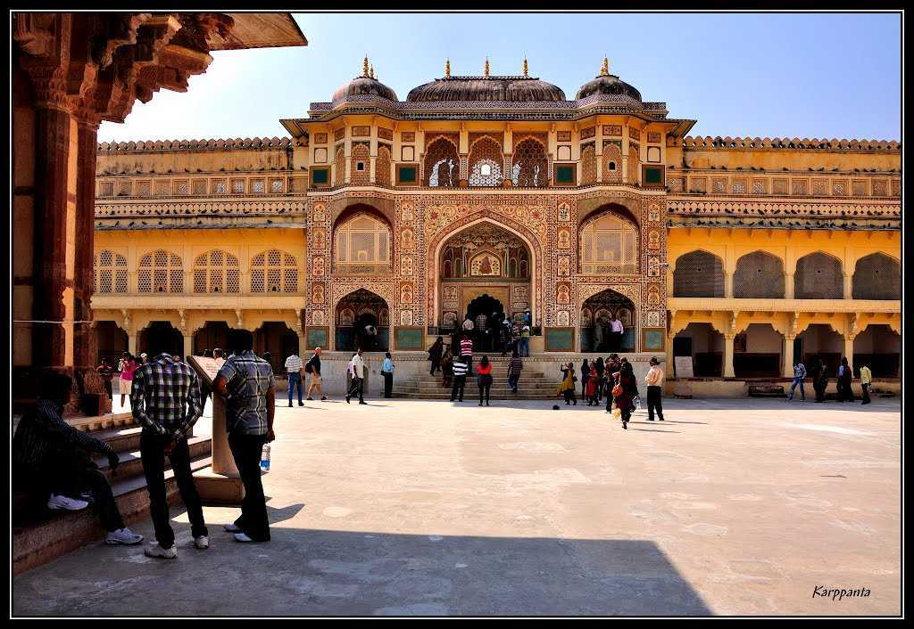
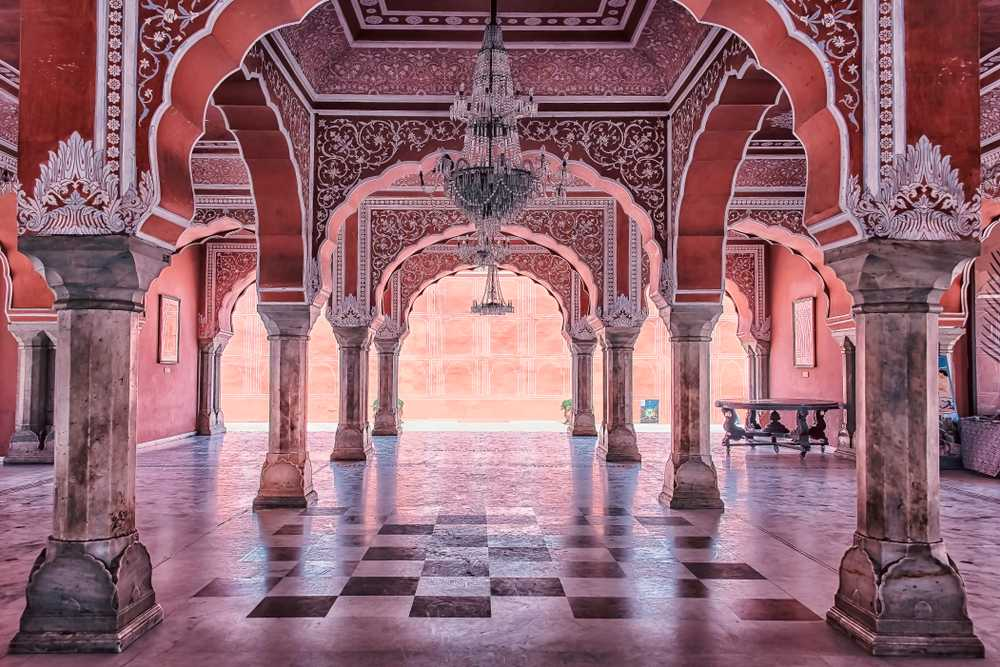
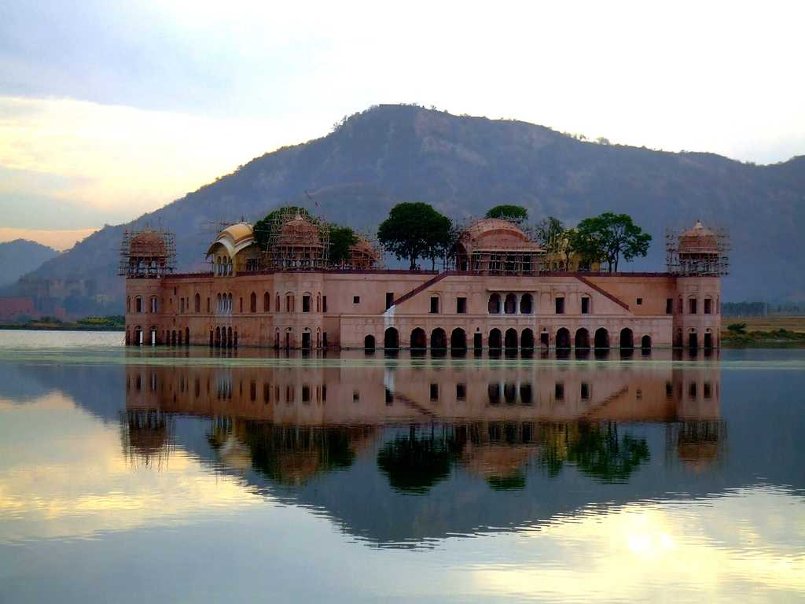

Jaipur
Jaipur is a vibrant amalgamation of the old and the new. Also called the Pink City, the capital of the royal state of Rajasthan, was ruled by the Rajputs for many centuries and developed as a planned city in the 17th century AD. Along with Delhi and Agra, Jaipur forms the Golden Triangle and hails as one of the most famous tourist circuits of the country.
With the old city surrounded by walls and gates decorated with drawings on the backdrop of a beautiful pink hue, Jaipur, the pink city successfully manages to retain its old-world charm. Home to a few UNESCO World Heritage sites including Amer Fort and Jantar Mantar, Jaipur holds many magnificent forts, palaces, temples and museums and brims with bustling local bazaars where you can shop to your heart's content. Popular bazaars in the city include Bapu Bazaar, Tripolia Bazaar and Johri Bazaar. The city is also very well known for its local food and the most famous dishes include the Ghewar, Pyaaz Kachori and Dal Baati Churma.
One of the largest cities in India, Jaipur is also home to all the modern amenities with some of the most exotic hotels and resorts in the world. The city boasts an international airport and is also very well connected by rail and road. The metro, local buses, shared tuk-tuks, auto-rickshaws and taxi aggregator apps including Uber and Ola solve the commute problem in the city quite comfortably.
Majestic buildings, tales of heroic battles, resplendent forts and palaces, and multi-faceted characters, Jaipur has long been one of the shiniest cultural jewels in the history of the Indian subcontinent. With people known for their hospitality, Jaipur offers a plethora of options for travellers.
Some of the important tourist attractions in Jaipur are:
Amer Fort
In the Pink City of Jaipur, cradled on the top of the Aravali Hill lies the Amer Fort, one of the most magnificent palaces in India. Also commonly known as the Amber Fort, this majestic building with its maze-like passages and serpentine staircases is an architectural masterpiece and with significant importance in Indian history. Only 11 kilometres away from the capital city of Jaipur, Amer Fort is clad in pink and yellow sandstone and is a part of an extensive complex. Built by one of the most trusted generals of Akbar, Maharaja Man Singh I in the year 1592, Amer Fort served as the main residence of the Rajput Rulers.
The Amer Fort through its large ramparts, several gateways and paved paths overlooks the Maotha Lake in the town of Amer, which used to serve as the capital of the erstwhile Jaipur princely state. The fort is big enough that it will take you at least two to three hours to explore it in detail, and you can also choose to avail of the audio guides to lead you through this fascinating building while explaining the history of the place. Getting an elephant ride up the stairs to the Amber Fort is also a popular tourist activity. The fort sees over five thousand visitors daily and rightfully, the Amer Fort was inducted into UNESCO World Heritage Site list as part of the "Hill Forts of Rajasthan" along with five other forts.
City Palace
The magnificent City Palace in Jaipur is one of the most famous tourist attractions located in the old part of the city. Built by Maharaja Sawai Jai Singh during the years 1729 to 1732, the vast complex of the palace occupied one-seventh of the walled city. In fact, it was once the seat of the Maharaja of Jaipur. The palace is divided into a series of courtyards, buildings and gardens including the Chandra Mahal and the Mubarak Mahal. The museum showcases various unique handcrafted products and other things that belong to the royal heritage of the City Palace.
The facade itself is designed with acute and detailed handiwork and showcases a blend of Mughal and Rajput architecture styles. The outer wall was built by Jai Singh II, however, the palace itself has been subjected to various changes over the course of time, with some of them even belonging to the early 20th century. The City Palace has three gates, out of which the Virendra Pol and Udai Pol are open to the public.
Hawa Mahal

The massive edifice of Hawa Mahal stands at the intersection of the main road in Jaipur, Badi Chaupad and was built by Maharaja Sawai Pratap Singh in the year 1799. Hawa Mahal derives its name from its unique structure, which is a mesh of small windows that allowed cool wind to enter the palace and hence kept the palace comfortable during the hot summer months. The main reason behind the palace's construction was to allow the women of the royal house to observe the festivities on the streets whilst being unseen from the outside as was the custom of the land. It is located right on the edge of the City Palace Jaipur and extends right to the 'zenana'.
Hawa Mahal is a structure made of red and pink sandstone and has a pyramidal structure which almost resembles a crown. It has been embellished with 953 tiny windows, also known as 'Jharokhas' and embellished with gorgeous latticework. From within, the Hawa Mahal palace is based on five floors each of which has a uniquely decorated chamber. A charming fountain welcomes you inside the main palace, from whereon you can make your way up to the different floors. The top of the palace offers a brilliant view of the City Palace, Jantar Mantar and the ever-busy Siredeori Bazar. There is a small museum as well which holds some rich relics and miniature paintings.
Jantar Mantar

Located near the City Palace in the regal city of Jaipur, Jantar Mantar is the largest stone astronomical observatory in the world. Owing to its rich cultural, heritage and scientific value, Jantar Mantar in Jaipur has also been featured on UNESCO's list of World Heritage Sites. This ancient study boasts of nineteen instruments built out of stone and brass and was built by Raja Sawai Jai Singh in 1727-33. The intelligent construction and placement of these instruments allowed the observers to note the position of heavenly bodies with their naked eye alone. Time has failed to lay dust upon this engineering marvel and it still works as well as it used to in the olden times.
The main objective of building this vast observatory was to study and gather information about space and time. The instruments here pertain to Egyptian study of Ptolemaic astronomy and follows three classical celestial coordinates to track the positions of heavenly bodies- namely horizon-zenith local system, the equatorial system and the ecliptic system. Another fact that makes this destination unique is that the world's largest sundial is situated here. The observatory in Jaipur is a part of a collection of five other such observatories built by Raja Jai Singh, which are located in New Delhi, Ujjain, Varanasi and Mathura. The best experience here is undoubtedly the light and sound show that takes place every evening and Jantar Mantar lights up like a firefly!
Jal Mahal
Sitting prettily right in the centre of the Man Sagar Lake on the outskirts of Jaipur, lies the splendid and tranquil Jal Mahal. A masterful creation, it is bordered by the Nahargarh Hills. This low rise symmetrical Palace was once a shooting lodge for the Maharajas and now fascinates many visitors from all over the world. Jal Mahal was constructed in the 1750s and was commissioned by Maharaja Madho Singh. It is indeed one of the most photographed monuments in India. The most striking feature of this palace is that while only one storey that appears above the water level, there are in fact 4 storeys submerged underneath.
Sitting prettily right in the centre of the Man Sagar Lake on the outskirts of Jaipur, lies the splendid and tranquil Jal Mahal. A masterful creation, it is bordered by the Nahargarh Hills. This low rise symmetrical Palace was once a shooting lodge for the Maharajas and now fascinates many visitors from all over the world. Jal Mahal was constructed in the 1750s and was commissioned by Maharaja Madho Singh. It is indeed one of the most photographed monuments in India. The most striking feature of this palace is that while only one storey that appears above the water level, there are in fact 4 storeys submerged underneath.